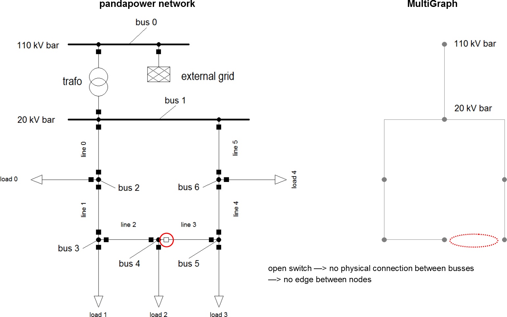

Create networkx graph¶
The basis of all topology functions is the conversion of a padapower network into a NetworkX MultiGraph. A MultiGraph is a simplified representation of a network’s topology, reduced to nodes and edges. Busses are being represented by nodes (Note: only buses with in_service = 1 appear in the graph), edges represent physical connections between buses (typically lines or trafos). Multiple parallel edges between nodes are possible.
This is a very simple example of a pandapower network being converted to a MultiGraph. (Note: The MultiGraph’s shape is completely arbitrary since MultiGraphs have no inherent shape unless geodata is provided.)
{kind=link}
Nodes have the same indicees as the buses they originate from. Edges are defined by the nodes they connect. Additionally nodes and edges can hold key/value attribute pairs.
The following attributes get transferred into the MultiGraph:
lines |
trafos |
|---|---|
|
|
Apart from these there are no element attributes contained in the MultiGraph!
Creating a multigraph from a pandapower network
The function create_nxgraph function from the pandapower.topology package allows you to convert a pandapower network into a MultiGraph:
Examples
create_nxgraph(net, respect_switches = False)
{kind=link}
create_nxgraph(net, include_lines = False, include_impedances = False)
{kind=link}
create_nxgraph(net, include_trafos = False)
{kind=link}
create_nxgraph(net, nogobuses = [4])
{kind=link}
create_nxgraph(net, notravbuses = [4])
{kind=link}